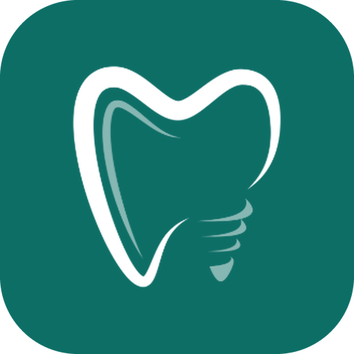
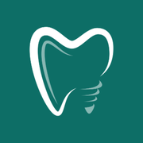

Dental Flow · versões do logotipo
Gerado a partir do símbolo original (dente), sem o quadrado escuro. PNG com fundo transparente.


1 · Símbolo verde / brancoPara a barra clara e fundos escuros
Recomendado na barra
Recomendado na barra

2 · Símbolo turquesa originalMais vivo; no fundo claro fica suave
3 · Ícone invertidoDente branco sobre verde: favicon e app
Recomendado no favicon
Recomendado no favicon
4 · Ícone cremeDente verde sobre o creme da marca
5 · Ícone degradêDo verde da marca ao turquesa do logo
6 · Selo coralUsa o coral do “agora”; para destaques
DentalFlow7 · Logotipo horizontalSímbolo + nome, para fundo claro
DentalFlow8 · Logotipo horizontal escuroPara fundos escuros e apresentações
DentalFlow9 · EmpilhadoPara a tela Entrar


10 · FaviconÍcone 3 em 128, 45 e 16 px (arquivos de
public/)DentalFlowHojeAgendaPacientesDentalFlowHojeAgendaPacientesComo fica na barra de cimaEm cima: símbolo 1 · Embaixo: ícone 3 (hoje é o quadrado escuro com o dente turquesa)